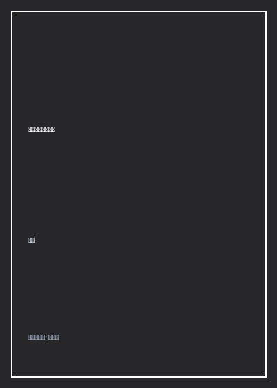

《文学：八个关键词》

总体观点
《文学：八个关键词》是一部当代大作家写给天下所有爱书人的文学信仰自白。张炜坚决反对将文学矮化为纯粹的修辞文字游戏、畅销书市场流水线或名利场交际工具，他认为文学本质上是人类精神对抗庸俗、平庸与死亡的最崇高神圣仪式。
作者以'童心、泥土、清洁、悲悯、尊严、野性、理性、力量'八个大词构建起一座巍峨的文学精神殿堂。他带领读者重读托尔斯泰的浩瀚、陀思妥耶夫斯基的深渊、卡夫卡的荒诞、海明威的硬骨与屈原司马迁的风骨，向世人阐明：伟大的文字必须沾染大地的泥土、浸透对弱者的悲悯，同时保持内心的绝对洁净与傲骨。
全书不仅传授虚构叙事与文字锤炼的工匠奥秘，更在喧嚣数字时代发出了一声庄严呼唤：在这个日益功利、浮浅与娱乐至死的世界上，守护文学就是守护人类最后的心灵净土，唯有拥有文学滋养的灵魂，才不至于沦为时代的空心人。
核心观点
-
1. 童心作为文学的源头活水：未被世俗污染的原初直觉
丧失了童心的人只能写出陈词滥调的官样文章，伟大的作家终生葆有一双孩子般清澈好奇、能够对一片落叶发出惊叹的纯真眼睛。
安徒生与托尔斯泰之所以能击穿千万读者的心扉，核心在于他们哪怕到了白发苍苍的晚年，依然能像七岁孩子一样感受万物的痛感与欢悦。 -
2. 泥土的气味与大地的道德：拒绝悬浮的虚无狂想
优秀的文学必须牢牢扎根在现实土地的泥浆与草木之中，失去对具体庄稼、农民老茧与乡野呼吸的触摸，文学就会沦为空洞的文字标本。
福克纳一生死守约克纳帕塔法县的一捧泥土，莫言在山东高密东北乡的红高粱地里吸吮养分，写出了震撼世界的史诗长卷。 -
3. 清洁精神的道德洁癖：拒绝向世俗平庸低头妥协
文学的清洁不仅是语言修辞的不落窠臼、拒绝套话垃圾，更是作家心灵的纯粹操守——绝不为了稿酬、奖项或权贵掌声出卖真诚。
卡夫卡在生前宁可默默无闻担任工伤保险局底层职员，在深夜陋室写下直面灵魂绝境的手稿，也不涉足文坛名利场的虚荣宴席。 -
4. 悲悯的情怀：把耳朵贴在大地上倾听受难者的抽泣
文学不为权贵唱赞歌，文学唯一的崇高天职是站在弱小者、被侮辱与被损害者的身旁，用充满泪水的文字替他们发出受苦的申诉。
陀思妥耶夫斯基在《罪与罚》中描写拉斯柯尔尼科夫向街头受尽屈辱的索尼娅下跪：'我不是向你下跪，我是向人类所有的苦难下跪。' -
5. 尊严与野性的共振：骨头硬朗的文字才能穿越时空
真正的伟大文学永远带着未被体制完全驯服的原生野性与桀骜不驯的尊严风骨，像一把锋利的投枪刺破虚伪社会的装模作样。
司马迁身受腐刑奇耻大辱，在屈辱深渊中发愤著《史记》，字里行间流淌着'究天人之际，通古今之变'的傲岸风骨。
全书思维导图 · 知识脉络树
全书结构
-
关键词一与二：童心与泥土——文学大树的根系与幼苗
阐明作家如何保护内心的赤子感知力，探讨土地伦理、乡土记忆与实证经验对抵抗浮浅悬浮写作的奠基性意义。
回忆自己在胶东半岛林海雪原的少年流浪岁月，泥土的腥味与松涛的轰鸣如何成为其毕生创作《你在高原》的不竭养分。 -
关键词三与四：清洁与悲悯——精神的防腐剂与道德的底线
深入剖析文字洁癖与灵魂高洁的辩证关系，引导青年读者建立对底层苦难的共情力，拒绝犬儒主义的冷漠嘲弄。
细读契诃夫短篇小说《苦恼》中老马车夫在风雪中向老马倾诉丧子之痛的绝美片段，展现世界级悲悯文学的震撼力量。 -
关键词五与六：尊严与野性——文学骨骼的硬度与血性活力
探讨现代文学中日益萎缩的英雄主义与硬汉精神，呼唤挣脱教条拘束、重拾民间强悍生命力的原生野性之美。
分析海明威《老人与海》中老渔夫桑提亚哥在远海单挑鲨鱼群的名言：'人可以被毁灭，但绝不能被打败'的尊严史诗。 -
关键词七与八：理性与力量——驾驭激情的缰绳与击穿人心的轰鸣
阐述逻辑架构、哲思深度与形式技巧对野性激情的驾驭之道，界定一部真正伟大传世作品必备的精神冲击力（Force）。
剖析歌德《浮士德》中横跨天国、尘世与地狱的宏大理性结构，展现古典巨匠在漫长六十年打磨中凝聚的思想伟力。 -
结语：在喧嚣时代为灵魂守护一座文学灯塔
张炜大师课的终章寄语，向所有在物质浪潮中依然坚持阅读经典、怀抱崇高梦想的青年学子致以深情的祝福与勉励。
作者写下全书最经典的题词：'只要世界上还有一个人在深夜的书桌前被一页文字感动落泪，人类的尊严之火就永远不会熄灭'。